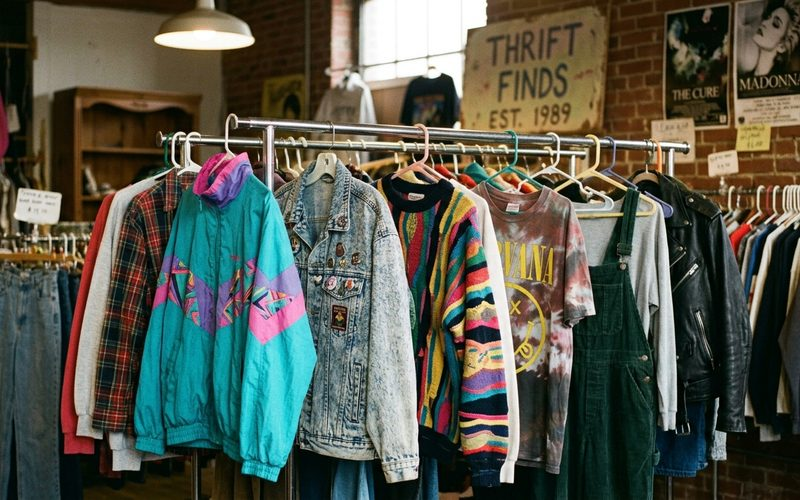

Poucas décadas na história da moda foram tão intensas — e tão influentes no estilo contemporâneo — quanto os anos 80 e 90. Foram épocas de contradições férteis: enquanto os 80 celebravam o excesso, a ombreira e a cor saturada, os 90 responderam com o minimalismo, o grunge e a androginia. Hoje, as duas décadas convivem nas araras dos melhores brechós de curadoria, e quem sabe ler sua história tem vantagem enorme no garimpo.
Para entender o que procurar — e o que valorizar — em peças dessas décadas, é preciso conhecer o contexto que as gerou. Moda não surge no vácuo: ela é resposta a transformações sociais, econômicas e culturais que se refletem em cada silhueta, em cada cor, em cada textura escolhida pelos estilistas do período.
A década de 1980 foi marcada pela ascensão da mulher no mercado de trabalho — em posições de liderança antes exclusivamente masculinas — e a moda respondeu com a linguagem do poder. As ombreiras eram literais: elas aumentavam os ombros das mulheres para que ocupassem mais espaço físico e simbólico. Os blazers eram estruturados ao extremo. As cores eram fortes — vermelho, cobalto, amarelo — porque visibilidade era o objetivo.
No Brasil, os anos 80 também foram marcados pela redemocratização e por uma explosão de energia cultural que se refletiu na moda. As estampas tropicais exuberantes, o jeans de cintura alta, os conjuntos de malha colorida — tudo isso convive hoje nos brechós de curadoria como documentos de uma época em que a moda foi instrumento de afirmação.
A resposta dos anos 90 ao excesso oitentista foi radical. O minimalismo de Calvin Klein e Helmut Lang propôs roupas em cores neutras, cortes limpos e silhuetas que não pediam atenção — mas a conquistavam pela precisão. No polo oposto, o grunge trouxe o flanela sobre o vestido florido, a bota pesada com meia-calça, a estética do descuido intencional. Os dois extremos conviveram na mesma década e criaram uma riqueza de referências que o estilo contemporâneo nunca parou de revisitar.
As peças dos anos 90 que mais aparecem nos brechós — e que mais valem o garimpo — são justamente as que representam a tensão entre esses dois mundos: o vestido slip de seda, a calça de cintura alta em jeans escuro, o blazer oversized de lã em cores neutras, a saia midi em tecido fluido. São peças que envelheceram com graça porque tocaram algo essencial no vestir feminino — a elegância sem esforço aparente.
Hoje, quando você encontra um blazer dos anos 80 com ombreira bem construída ou um vestido slip dos anos 90 em tecido legítimo, você não está apenas comprando roupa. Está levando para casa um fragmento de história que o ciclo da moda fez questão de manter relevante. É esse o valor único do garimpo em brechós de curadoria.